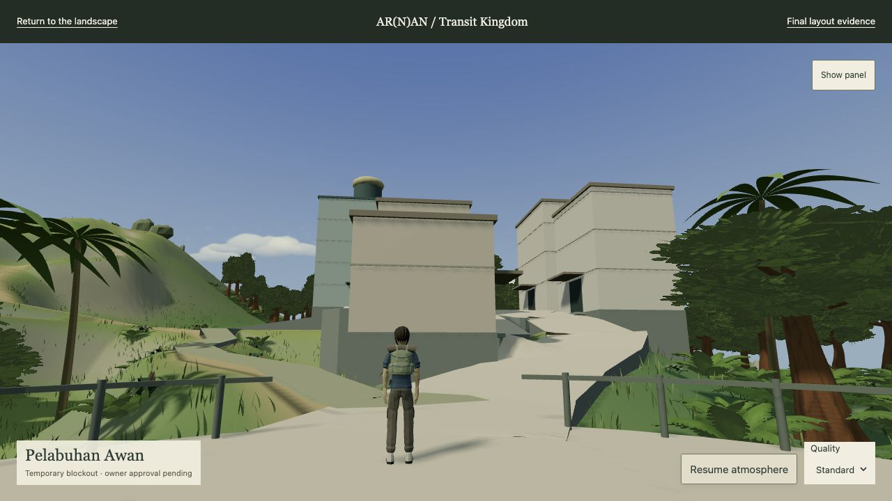
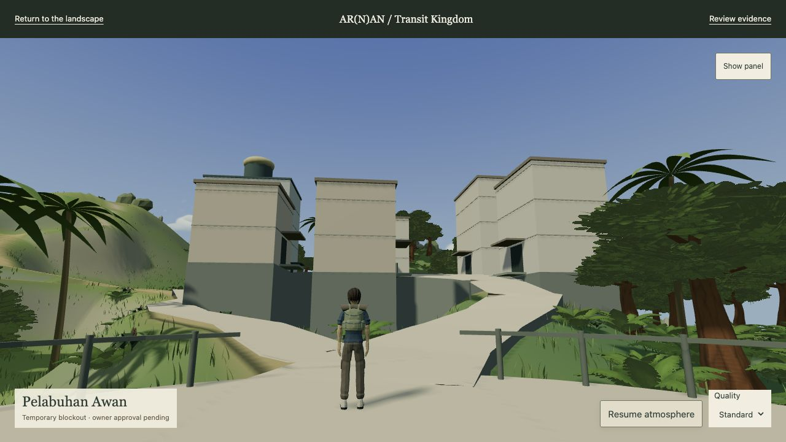
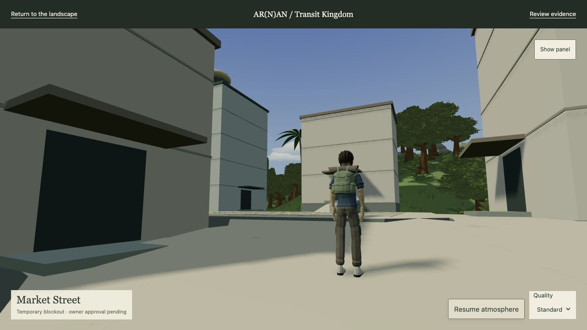
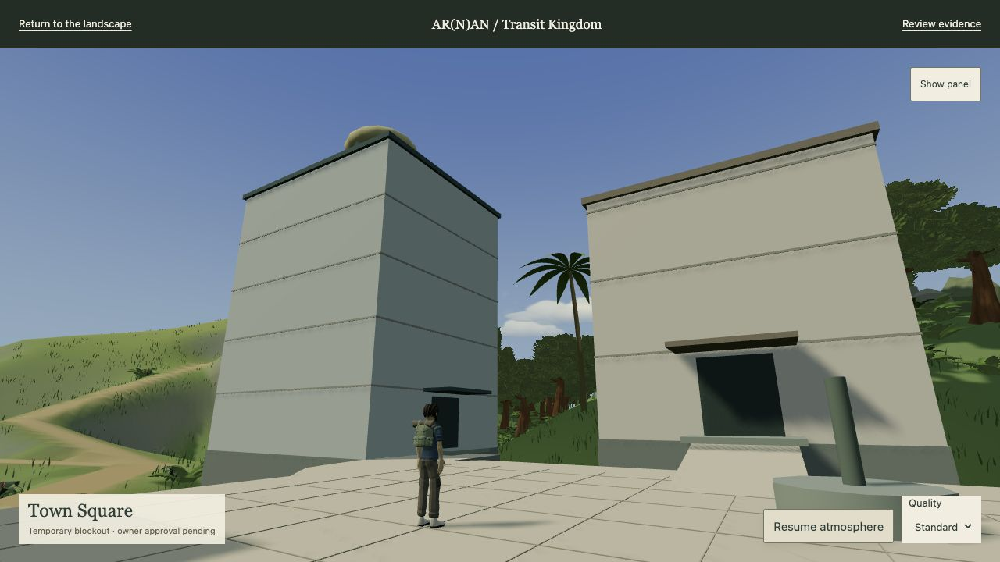
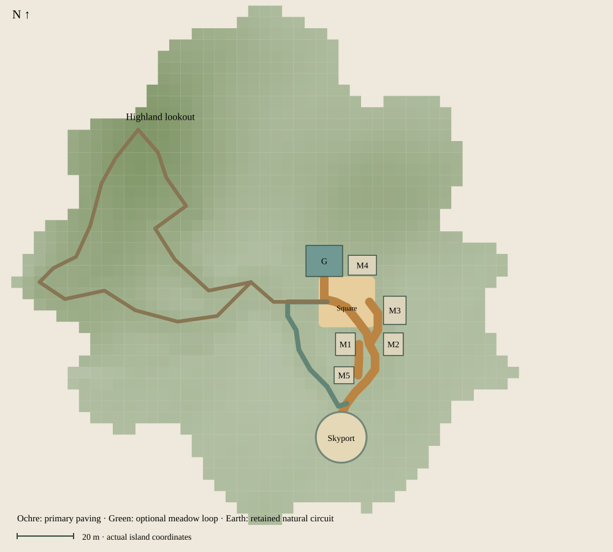

AR(N)AN / R0-B1.5 final layout validation
Transit Kingdom: the arrival, street and square
The provisionally accepted hub is retained. The primary approach is 6 m nominal mineral paving; its narrowest measured clear section is 5.5 m. The quieter gravel loop is 2.4 m nominal and 2.3 m measured. M1 and M5 form the west frontage; M2 and M3 share an east building line. M4 addresses the square. Atlas Guild now faces south into the plaza and keeps the sole civic crown.
These are reversible planning volumes, not permanent architecture. Final owner approval remains pending. No human score is awarded. STOP before R0-B2.
Four decisive browser views
Matched fixed cameras, 1280 × 720 captures, unchanged R0-A3 daylight and exposure 0.96. Pedestrian cameras are 1.65 m above rendered support with 60° FOV. Actual cameras and settings.

Matched view before refinement


Matched view before refinement


Matched view before refinement


Matched view before refinement

Continuous route and secondary choice

One uninterrupted keyboard-driven journey visits skyport → market → square → Guild → square → highland. Native W/Shift+W moves the existing animated character; optional bearing assistance steers only heading. No checkpoint reset occurs during the continuous journey. A Space-triggered jump and landing, both optional loops, doorway approaches and an unassisted turn/strafe check are recorded separately. This is a controlled traversal check, not independent unguided owner playtesting.
| Browser journey | Result | Actual travel | Moving time | Requested stationary time | Grounded support error |
|---|---|---|---|---|---|
| Continuous arrival → market → square → Guild → highland | Complete | 215.0 m | 60.4 s | 0.000 s | 0.000 m |
| Highland → Cloudbreak → Town return | Complete | 190.3 m | 41.0 s | 0.000 s | 0.000 m |
| Optional meadow return to Skyport | Complete | 70.2 m | 33.7 s | 0.000 s | 0.000 m |
| Town Square → Atlas Guild | Complete | 15.1 m | 7.4 s | 0.000 s | 0.000 m |
Requested stationary time includes brief input acceleration at a restart; it is not automatically a collision stall. Position/camera samples · Free controls · Actual Guild approach.

Measured widths, slopes and transitions
| Route | 3D length | Min clear width | Support elevation | Max grade / 3 m grade | Max rise per 0.25 m |
|---|---|---|---|---|---|
| arrival | 38.0 m | 5.5 m | 17.1–21.5 m | 31.3% / 26.0% | 7.8 cm |
| market | 15.6 m | 6.0 m | 21.5–22.3 m | 12.9% / 12.9% | 3.1 cm |
| guild | 16.0 m | 4.0 m | 22.3–24.1 m | 28.1% / 28.1% | 6.9 cm |
| east-frontage | 16.9 m | 3.9 m | 21.5–22.3 m | 13.3% / 11.9% | 3.3 cm |
| garden-loop | 60.0 m | 2.3 m | 17.4–22.3 m | 18.9% / 18.9% | 4.6 cm |
| ridge-connector | 29.8 m | 3.0 m | 20.6–22.3 m | 15.5% / 15.5% | 3.9 cm |
| highland | 95.2 m | 2.6 m | 21.0–48.7 m | 82.5% / 55.2% | 20.5 cm |
| scenic-return | 155.1 m | 2.5 m | 21.0–48.7 m | 49.3% / 48.7% | 12.1 cm |
| west-frontage | 11.2 m | 2.3 m | 19.4–21.5 m | 21.0% / 20.0% | 5.2 cm |
Cross sections use 0.05 m samples and are capped at the nominal corridor width; urban sections require actual rendered paving. The capsule-centre span is 0.68 m narrower. Grades use the rendered support at 0.25 m stations; the second grade uses a 3 m baseline. The steep existing highland terrain is preserved. These are game-navigation measurements, not an accessibility or engineering approval. Complete measurements.
A usable square and reachable entrances
The chamfered square retains 352 m² gross paved area, approximately 299.1 m² of level, capsule-clear public floor at 0.25 m sampling, and a clear 10 × 7 m centre. Guild access rises 1.8 m on its broad approach. Every proposed entrance faces a connected public path, with supported flush landings, 2.4 × 2.9 m door markers and 3.11 m canopy clearance. The Guild crown has clear terrain/massing sightlines from arrival, market and square; foliage was also inspected in the browser.
Plot support
| Plot | Existing ground | Floor | Min floor clearance | Max support height | Void samples |
|---|---|---|---|---|---|
| M1 | 14.2–17.8 m | 21.5 m | 3.7 m | 7.4 m | 0 |
| M2 | 15.7–20.7 m | 21.5 m | 0.8 m | 5.9 m | 0 |
| M3 | 15.4–19.6 m | 22.3 m | 2.7 m | 7.0 m | 0 |
| M4 | 19.1–23.0 m | 23.3 m | 0.2 m | 4.3 m | 0 |
| M5 | 14.7–17.7 m | 19.4 m | 1.7 m | 4.8 m | 0 |
| G | 18.1–23.9 m | 24.1 m | 0.2 m | 6.2 m | 0 |
Plots use 0.5 m sampling, including every boundary. Reversible foundation masses extend 0.15 m below each plot's lowest terrain sample; floor levels clear the highest sample. No terrain was flattened. Some backs need up to 7.4 m of support: this remains a substantial architectural/retaining-wall task for an approved R0-B2, not finished structural design.
Verification and limits
Fresh regression output: tests. The static audit retains 58 inherited findings; compare its exact content with the baseline. Production and archive hashes confirm the approved landscape and licensed sources are preserved. No new GLBs, textures, permanent buildings, characters or gameplay systems.
600 moving frames; 180.0 fps; 6.3 ms walking p95. 100 draw calls, 1,176,972 triangles at the sampled town view. Drawing buffer 1280 × 658; quality standard. CPU render submission 0.549 ms, not GPU timing. Town sample · Ridge sample · Loaded resources · Browser warnings/errors.
Fresh side/underside inspection · Recorded camera audit · GLB payloads and instance counts · Home/Work and MBR check · Validation summary · Changes, QA findings and remaining issues. Owner review still determines whether the spatial experience is approved. Final facade richness, interiors and podium architecture remain outside this blockout phase.